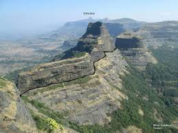
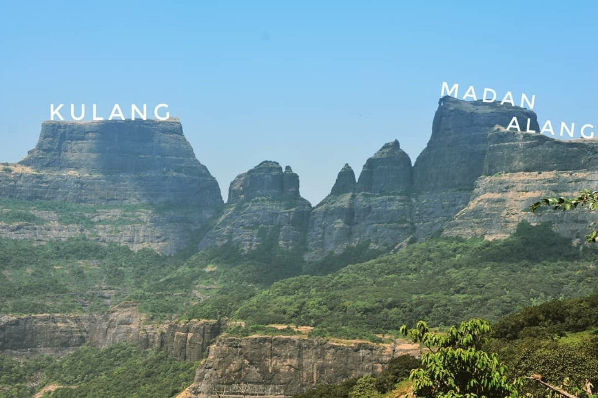

अलंग माडन कुलंग किल्ला
Location : Click Here For Google Map
- माहिती
- अलंग माडन कुलंग किल्ला महाराष्ट्र राज्याच्या नाशिक जिल्ह्यात स्थित एक ऐतिहासिक किल्ला आहे. अलंग, माडन आणि कुलंग किल्ले तीन किल्ल्यांचे समूह आहेत. या किल्ल्यांचा इतिहास मराठा साम्राज्याच्या स्थापनेच्या काळाशी संबंधित आहे. किल्ले नाशिक जिल्ह्याच्या इगतपुरी तालुक्यात वसलेले आहेत, आणि या किल्ल्यांचा महत्व विशेषतः छत्रपती शिवाजी महाराजांच्या काळात आहे. किल्ल्यांचा मुख्य उद्देश म्हणजे दुर्गाचे संरक्षण करणे आणि भव्य दृश्यांची रक्षा करणे.
या किल्ल्यांचे वास्तुकला अद्वितीय आहे. किल्ल्याच्या भिंती, बुरुज, दरवाजे आणि विविध संरचनात्मक वैशिष्ट्ये त्याच्या ऐतिहासिक महत्त्वाचे पुरावे आहेत. किल्ल्यांच्या शिखरावरून एक अप्रतिम दृश्य दिसते, ज्यामुळे या किल्ल्याचे आकर्षण वाढते. याच्या उच्च शिखरावर चढून त्याच्या ऐतिहासिकतेचा अनुभव घेणे एक रोमांचक अनुभव आहे.
आजकाल, अलंग माडन कुलंग किल्ला पर्यटकांसाठी एक महत्त्वाचे ऐतिहासिक स्थल आहे. किल्ल्याच्या ऐतिहासिकतेच्या आणि निसर्ग सौंदर्याच्या मिलाफामुळे, याच्या आसपास अनेक पर्यटक आकर्षित होतात. याचा पर्यटन म्हणून महत्त्व वाढले आहे, आणि किल्ल्यावर चढणे एक साहसी आणि ऐतिहासिक अनुभव आहे.
Explore the historical beauty

